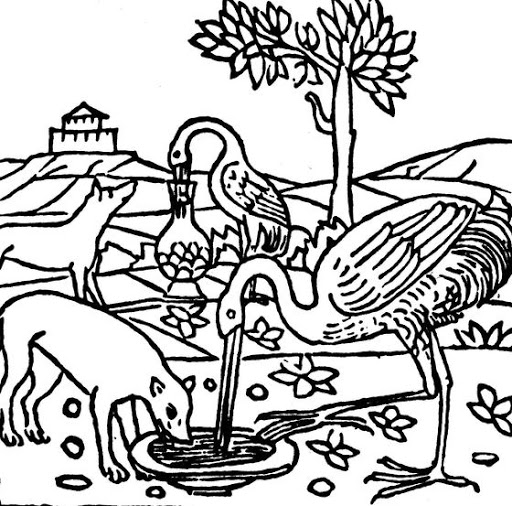

<?xml version="1.0" encoding="UTF-8"?>
<div xmlns="http://www.w3.org/1999/xhtml" data-template="templates:surround" data-template-with="templates/page.html" data-template-at="content">
    <div class="col-md-9">
        <a target="_blank" href="index.xql">
            <h1 data-template="config:app-title">Euporia</h1>
        </a>
        <div class="alert alert-success">
            <p>
                <a target="_blank" href="index.xql">
                    
                </a>
                <br/>
            </p>
            <p>
            <h3>References</h3>
            <ul>
                <li>Bambaci, Luigi, and Federico Boschetti. 2020. “Encoding the Critical Apparatus by Domain Specific Languages – The Case of the Hebrew Book of Qohelet.” In <em>Atti del IX Convegno Annuale AIUCD. La svolta inevitabile: sfide e prospettive per l’Informatica Umanistica</em>, edited by Cristina Marras, Marco Passarotti, Greta Franzini, and Eleonora Litta. Milano: Università Cattolica del Sacro Cuore. http://amsacta.unibo.it/6316/.</li>
                <li>Bambaci, Luigi, Federico Boschetti, and Riccardo Del Gratta. 2018. “Qohelet Euporia – A Domain Specific Language for the Encoding of the 	Critical Apparatus.” <em>International Journal of Information Science and Technology</em> 3 (5): 26–37.
</li>
                <li>Mugelli, Gloria, Federico Boschetti, Riccardo Del Gratta, Angelo Mario Del Grosso, and Fahad Khan. 2016. “A User-Centred Design to Annotate Ritual Facts in Ancient Greek Tragedies.” <em>BICS</em> 59 (2): 103–20.</li>
            </ul>
            <h3>Applications</h3>
                <ul>
                    <li>
                        <a target="_blank" href="index.xql">Annotation Panel</a>
                    </li>
                    <li>
                        <a target="_blank" href="https://cophilab.ilc.cnr.it/parseForge">Parser Forge</a>
                    </li>
                    <li>
                        <a target="_blank" href="../eXide/index.html">eXist-db IDE</a>
                    </li>
                </ul>   
            </p>
        </div>
    </div>
</div>